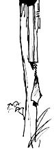
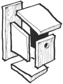
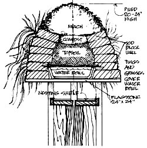
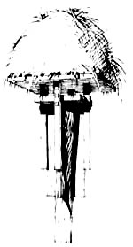

Bird Housing: Your Shop Teacher Got It Wrong
Reinterpreting a shop class favorite, including materials, construction, diagrams, mulch, compost and topsoil.
By the Mother Earth News editors
May/June 1990
When it comes to houses for humans, styles vary from year to year, from region to region and fad to fad. We're not at all sure what the most appropriate shelter for homosapiens should be, and our architecture expresses this uncertainty. It's not surprising to find houses that have nothing to do with the region in which they stand. Cape Cod cottages can be found in the Arizona desert, and ranch houses are popular in Maine. Anything goes.
Adding to our confusion is the wide range of building materials now available. No longer must we fell and saw into boards the trees from which our houses will be built. We order windows from Minnesota, plasterboard from Pennsylvania, lumber from Oregon, tiles from Mexico, vinyl from Kentucky, lamps from Korea, towel bars from Illinois and cabinets from Canada. The result: houses with all the charm of a building materials showroom.
Being no longer wild creatures, no longer partial to caves or tree huts, we sail rudderless on the seas of architecture. That's why we respond so positively to the discovery of birds' nests or animal dens.
They seem, without exception, so right, so much a part of their environment, that we can imagine no changes that would make them more so. They have an inevitability of design that makes us wish our own shelters could be as appropriate.
But it is not to be; we lost, Somewhere along the way, the capacity to design by instinct perfect, natural houses. All we can do now is hire architects and hope for the best.
Maybe it serves us right. Maybe it's the price we have to pay for the convenience of indoor plumbing and automatic heating systems. Unnatural conveniences breed unnatural surroundings. The only sad part is that we then try to impose this artificiality upon other creatures.
Take birds, for instance.
We forget that even the most common ones around us are utterly wild, as wild as the lion on the Serengeti or the shark in the sea. Too often, we regard birds only as cute little toys that flit from branch to branch making chirping noises. Consequently, the birdhouses we offer them not only are ugly and inappropriate, but they also help perpetuate our avian misconceptions.
How in the world did we manage to produce such nonsense when all the messages from the natural world were saying things so richly different?
In sixth grade we were taught that six pieces of wood, with a hole In one of them, could make the perfect birdhouse. The teacher said so; It had to be true. Our parents marveled at our ingenuity. Maybe we were all wrong.
Birds, of course, will nest almost anywhere, in anything, when the mating pressure is on and competition for housing is hot. So you can't go by their responses to our silliness. Birds will use whatever fits, and many man-made birdhouses fit very well. That's not the problem. The problem is that we make such fools of ourselves.
We go about it all wrong.
IN sixth-grade shop class we were taught that six pieces of wood, with a hole in one of them, could be assembled to create a perfect birdhouse. The teacher said so; it had to be true. Our parents marveled at our ingenuity, thereby confirming what the teacher had said. We marveled at it, too. Then we hung our masterpieces out-of-doors and, sure enough, birds nested in them, reconfirming everything. How much more perfect could six pieces of wood possibly get?
Much more. We are now entering a new age of environmental awareness.
No longer do we see smoke belching chimneys as signs of economic well-being. No longer do we see harbors as the places to dump sewage, or chemicals as the way to better living. We're slowly coming to realize that it is we who have polluted and poisoned and eroded our earthly home, we who have wiped out thousands of species, we whose very houses are environmental horrors, wasting resources and destroying land.
OUR awakening is leading us to take a closer look at creatures we once thought of only as sources of food, fur, feathers or song. We're beginning to discover what miracles share the land with us, and that discovery is changing the way we see not only human architecture but the architecture we offer the birds as well.
We can never match the structures the birds themselves create. Try to imagine weaving a delicate basket of twigs and grasses in just a few days, with no previous experience, no practice, no tools and no bands!
The best we can ever hope to do is build bridges from the man-made to the wild. Even then, we are likely to fall. At best, we can only partly succeed. But we owe it to the creator of the birds, if not to the birds themselves, to give it our very best shot; to say, somehow, in human terms, what they say so movingly in grass and twigs and straw.
Construction
If you use "found objects" instead of premium lumber for your birdhouse, sizes will differ somewhat from those shown here. That doesn't matter. You can juggle the dimensions to suit the materials at hand, and to please your own eye for elegance and proportion.
Even after having built more birdhouses than I can count, I still fiddle with the proportions as I go along, sometimes straying considerably from the dimensions I'd worked out earlier. Maybe one aspect of the design needs more emphasis. Maybe the setting demands a longer, shorter, thinner or bolder form. Maybe the height of the viewer's location makes revisions necessary; things look quite different when seen from above (or below) as opposed to straight on. The only thing to remember is that the design that follows will probably not be helped by a lot of arbitrary changes. It's been pretty thoroughly worked out by trial and error over the years, to the point that it now seems to be just about as appealing and graceful to most people as it can be, given the physical limitations set by the birds themselves.
Materials
You shouldn't have to pay for any materials but the nails. If birds can scrounge all the materials they need, surely we can, too.
Just look for mostly thin (1/2", 3/4" and 1''), weathered boards of various lengths and poles or small tree trunks to use as mounting posts. Try to find pieces with interesting grains. Here's your chance to use all those warped, split, beautiful rejects you've been waiting to turn into something.
But make sure the materials you collect don't smell of paint or poisons. The materials birds themselves build with eventually rot and become wildflowers or trees again. When we introduce deadly, soulless materials such as plastics, paint or preservatives into the lifestreams of these beautiful creatures, we endanger not only them but ourselves as well.
The First Earth-Sheltered Birdhouse
WHEN I initially decided to design an underground birdhouse I thought, naturally, of a conventional one set beneath the ground. But then someone pointed out to me the fact that birds are more sky oriented than earthbound. Once I accepted that revelation, the current birdhouse design began to take form in my mind. I saw it as a high nesting shelf protected by a widely overhanging profusion of wildflowers, the roof having a dome-shaped contour.
But after testing such an arrangement during the great summer drought of '88, 1 soon discovered that only a high mound of waterholding mulch would keep the plants alive and the birds comfortable. Obviously, the success of the design depends on its waterholding capacity, and that capacity is based on natural principles we've only now begun to rediscover as we move into the era of limited water supplies. Mulch, topsoil, compost, roots, shade and a reservoir combine to carry the process along from rainstorm to rainstorm.
That's why aging architects design earth-covered birdhouses. It isn't that the birds don't appreciate them. They do. But the priority lies with architecture for humans. When you see what a pleasant, healthy wild garden this can be, it won't take a great flight of the imagination to see in your mind's eye the world of the future, in which windows in the hillsides will be the only clue that a city is near. When the first birdhouse of this design went up on Cape Cod, the local papers ran pictures of it as the world's first underground birdhouse. I was delighted by the response because we need so desperately to put most of our ugliness underground. Farms and forests all around the world are giving way to asphalt, concrete and the most wasteful kinds of buildings. If we buried our shopping centers and our parking lots, our factories and our offices, we'd have the beautiful green out-of-doors all around us again. And if we buried our houses, too, and did it the right way, they would be sunny, dry, energy efficient, easy to maintain, long-lasting and safe.*
Materials List
Support post Mulch Topsoil Compost Sod block Twigs and grasses Water bowl Nesting shelf (1" x 10" x 10")
4 Pieces of shelf edging (1" x 2" x 11")
1 2 Decorative blocks (1"x 1" x 1/4")
24 Galvanized 1'' brads
4 Stems
(1-1/2" x 1-1/2" x 24")
4 Fins (3/4" x 5 [or 6"] x 33-1/2") 1 Flagstone (24" x 24")
Malcolm Wells, a Cape Cod architect and illustrator, has over 40 years of experience designing and building environmentally minded bird structures. To order his book Classic Architectural Birdhouses and Feeders, send $9.95 (in MA add 5%; Canada $11 US.) to: MalcolmWells, 673 Satucket Rd., Brewster, MA 02631 or call (508/896-6850).
|
For rent: Nest with a view. User-friendly |
 ILLUSTRATIONS BY MALCOLM WELLS |
 |
|
 |
 |
 |